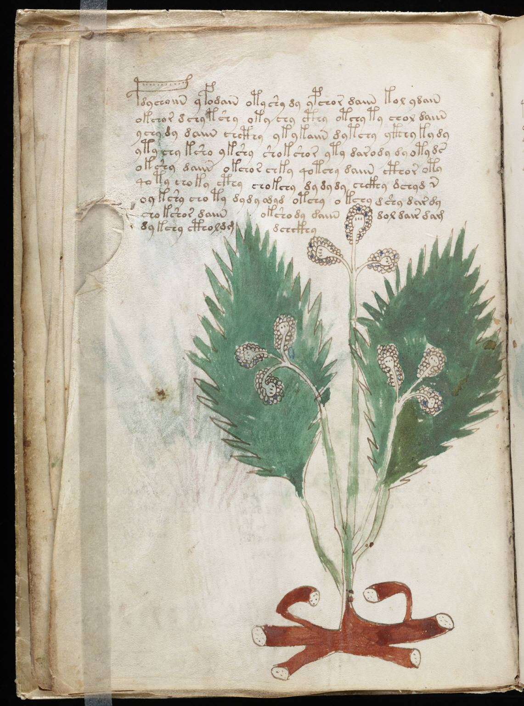

f14v
1pdychoiin yfodain otyshy dy ypchor daiin kol ydain2okchor dchy tshy oky chy cthy otchy ty chol daiin3ychy dy daiin chcthy ykykaiin dytchy ykchy ky dy4ytychy ksho ykshy shokshor yty darody dyotyds5okshy daiin okchor chky qotchy daiin cthor oty6qoty choky cthy chokchy dydydy chckhy dchyd n7oykshy choty dydy odyd otchy okchy dshy dardy8chokshor daiinokshody daiindol dair dam9dykchy ctholdgdchckhy
